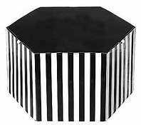

从堆叠到水平排列
使用单一的一组.col-md-*栅格类，就可以创建一个基本的栅格系统，在手机和平板设备上一开始是堆叠在一起的（超小屏幕到小屏幕这一范围），在桌面（中等）屏幕设备上变为水平

striped斑马条纹
hkkjsjkfkskllkjf
img-rounded圆角矩形
使用 .col-md-offset-* 类可以将列向右侧偏移。这些类实际是通过使用 * 选择器为当前元素增加了左侧的边距（margin）。例如，.col-md-offset-4 类将 .col-md-4 元素向右侧偏移了4个列（column）的宽度。